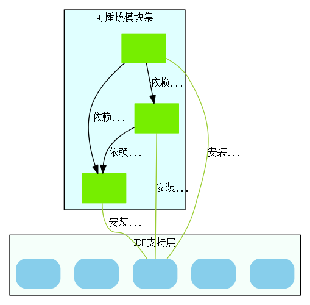
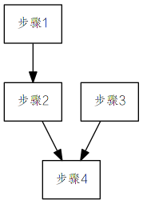
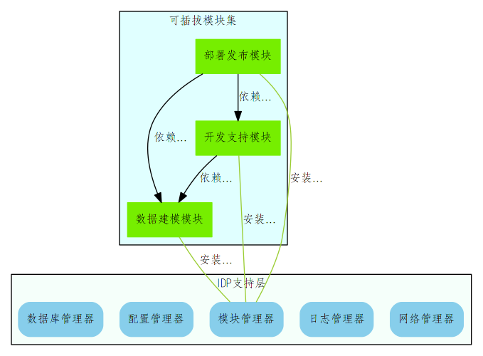

Graphivz中文显示问题
graphviz （相关详细教程请点击进入官网）是基于dot语言的绘图工具，可以画有向图，无向图，关系图，目录图，流程图等。在使用过程中，发现 Graphivz 对
中文的支持还是不够，容易出现各种各样的问题。
- 中文乱码问题
这种问题，很多人都遇到过，因为 Graphivz 默认是不支持中文的，所以如果直接写中文的画，会显示成乱码，一般这种情况可以修改文件的编码
格式为 UTF-8 , 然后将 fontname 设置为系统中存在的中文字体格式就可以解决。具体可以参考这篇博文 Graphviz使用简介(中文乱码的问题) ，我就不在赘叙了。
- 中文无法显示
这是我使用过程中确确实实遇到的问题。比如，我们使用如下 dot 代码来绘制一个 hash 表图。
可能这个问题跟系统环境有关，首先，我先贴一下我的环境
- 编辑器: GNU Emacs 25.2.1 (x8664-pc-linux-gnu, GTK+ Version 3.20.9) of 2017-02-25
- 系统: Linux version 4.4.39-gentoo (root@johans) (gcc version 4.9.4 (Gentoo 4.9.4 p1.0, pie-0.6.4) ) #1 SMP Wed Mar 8 09:21:39 CST 2017
digraph idp_modules{
rankdir = TB;
fontname = "Microsoft YaHei";
fontsize = 12;
node [ fontname = "Microsoft YaHei", fontsize = 12, shape = "record" ];
edge [ fontname = "Microsoft YaHei", fontsize = 12 ];
subgraph cluster_sl{
label="IDP支持层";
bgcolor="mintcream";
node [shape="Mrecord", color="skyblue", style="filled"];
network_mgr [label="网络管理器"];
log_mgr [label="日志管理器"];
module_mgr [label="模块管理器"];
conf_mgr [label="配置管理器"];
db_mgr [label="数据库管理器"];
};
subgraph cluster_md{
label="可插拔模块集";
bgcolor="lightcyan";
node [color="chartreuse2", style="filled"];
mod_dev [label="开发支持模块"];
mod_dm [label="数据建模模块"];
mod_dp [label="部署发布模块"];
};
mod_dp -> mod_dev [label="依赖..."];
mod_dp -> mod_dm [label="依赖..."];
mod_dp -> module_mgr [label="安装...", color="yellowgreen", arrowhead="none"];
mod_dev -> mod_dm [label="依赖..."];
mod_dev -> module_mgr [label="安装...", color="yellowgreen", arrowhead="none"];
mod_dm -> module_mgr [label="安装...", color="yellowgreen", arrowhead="none"];
}

导致这一情况的有两种原因：
- 设置的字体在你系统中不存在，在这里，我的系统中不存在
Microsoft YaHei这种字体 - 在
Label中包含中文的时候, 英文引号和中文之间需要有空格分分隔。
但是很奇怪，这种情况只发生在 subgraph(子图) 中的 label 上, 而不会发生在 digraph 中的 label 上, 比如:
digraph{
rankdir = TB;
fontname = "FZFangSong-Z02";
fontsize = 12;
node [ fontname = "FZFangSong-Z02", fontsize = 12, shape = "record" ];
edge [ fontname = "FZFangSong-Z02", fontsize = 12 ];
p1 [label=" 步骤1 "];
p2 [label=" 步骤2 "];
p3 [label=" 步骤3 "];
p4 [label=" 步骤4 "];
p1->p2;
p2->p4;
p3->p4;
}

解决方法:
- 将中文字体设置为你系统存在的中文字体
- 在
Label中的中文和引号之间用空格隔开。
digraph idp_modules{
rankdir = TB;
fontname = "FZFangSong-Z02";
fontsize = 12;
node [ fontname = "FZFangSong-Z02", fontsize = 12, shape = "record" ];
edge [ fontname = "FZFangSong-Z02", fontsize = 12 ];
subgraph cluster_sl{
label="IDP支持层";
bgcolor="mintcream";
node [shape="Mrecord", color="skyblue", style="filled"];
network_mgr [label=" 网络管理器 "];
log_mgr [label=" 日志管理器 "];
module_mgr [label=" 模块管理器 "];
conf_mgr [label=" 配置管理器 "];
db_mgr [label=" 数据库管理器 "];
};
subgraph cluster_md{
label="可插拔模块集";
bgcolor="lightcyan";
node [color="chartreuse2", style="filled"];
mod_dev [label=" 开发支持模块 "];
mod_dm [label=" 数据建模模块 "];
mod_dp [label=" 部署发布模块 "];
};
mod_dp -> mod_dev [label="依赖..."];
mod_dp -> mod_dm [label="依赖..."];
mod_dp -> module_mgr [label="安装...", color="yellowgreen", arrowhead="none"];
mod_dev -> mod_dm [label="依赖..."];
mod_dev -> module_mgr [label="安装...", color="yellowgreen", arrowhead="none"];
mod_dm -> module_mgr [label="安装...", color="yellowgreen", arrowhead="none"];
}
